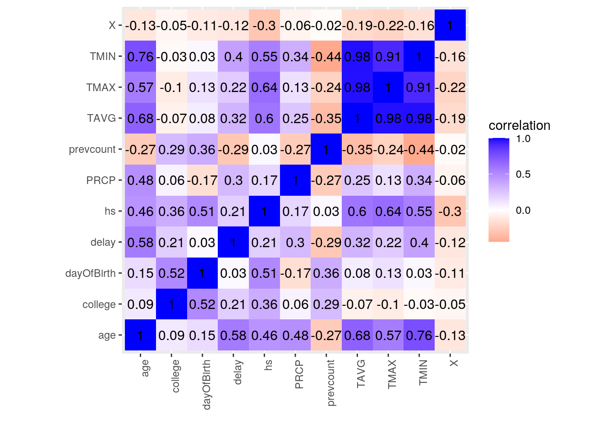
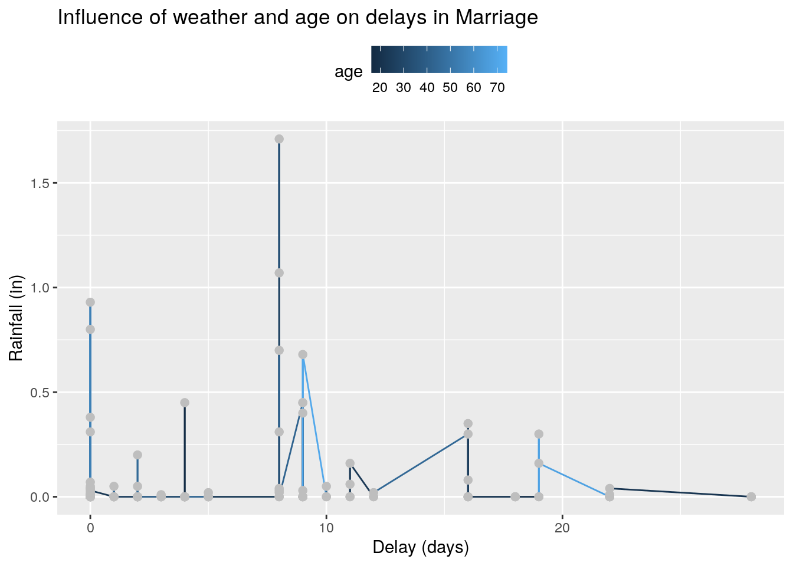
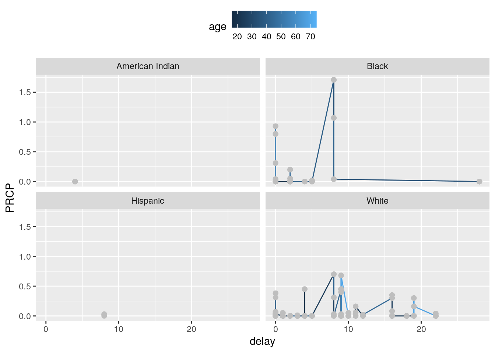
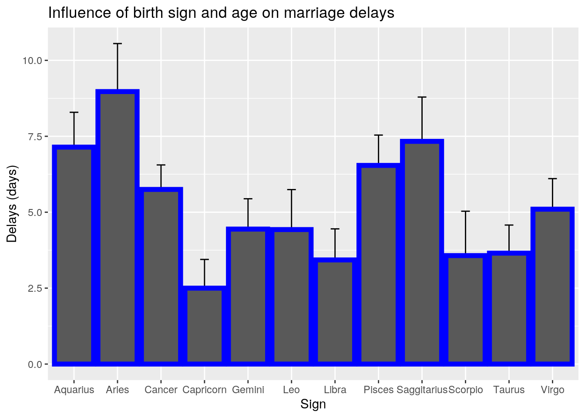
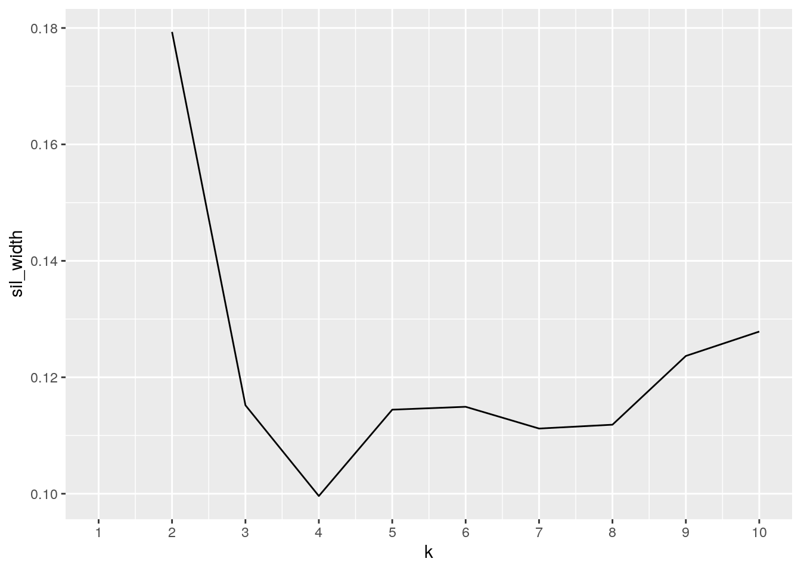
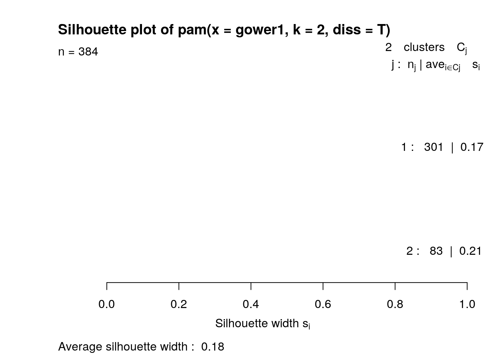
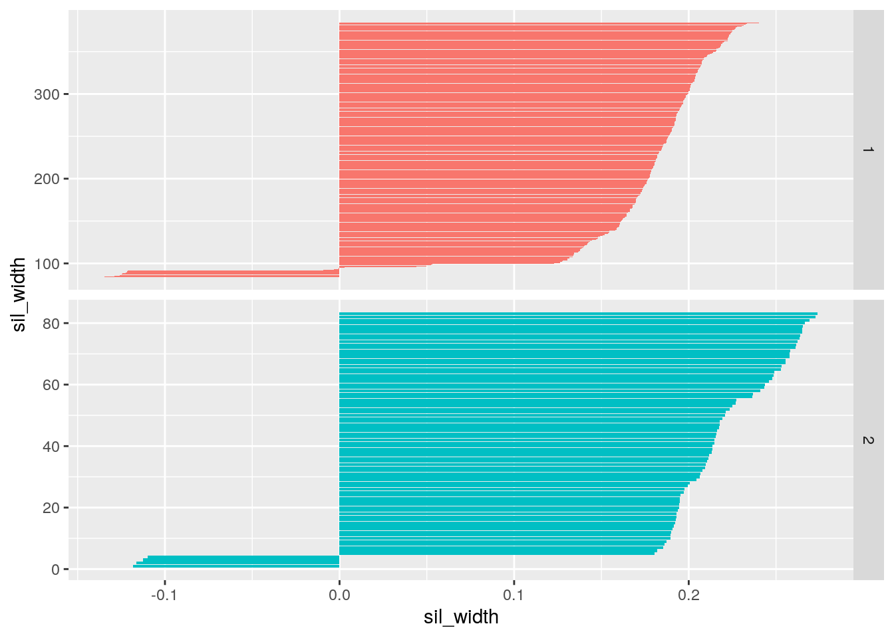

getwd()## [1] "/stor/home/jj37257/website/content/project"work_dir <- "/stor/home/jj37257/website/content/project"
Marriage <- read.csv("Marriage.csv")
weather <- read.csv("2530921.csv")
library(dplyr)
library(ggridges)
library(tidyr)
library(ggplot2)
library(kableExtra)
library(tibble)
library(cluster)## The data sets that I have chosen for this project were
## marriage and weather data from Mobile County, Alabama. I
## thought that these two data could go together when you
## think about how many people decide to have their ceremony
## based on the weather. People want to have a beautiful
## wedding on the perfect day, so I was wondering if there was
## a correlation between the weather and marriage ceremonies.
## Additionally, I was also curious if there was a correlation
## betweeen age, race, and delay of ceremony. The delay of
## ceremony was calculated by the number of days between the
## ceremony and the marriage application process. I was
## predicting that younger poeple would be more likely to rush
## into things and have the marriage ceremony soon after the
## application process than those who were older. As for race,
## I did not really have a prediction for it, but I was
## curious to see if there was any correlation between race
## and delay which could possibly be explained by
## socioeconomic factors.
## The variables in the marriage dataset had the application
## date, the ceremony date, the delay between the two, various
## demographic factors of the person who applied for it as
## well as who officiated their marriage. I acquired this data
## through the fivethirtyeight package. On the other hand, I
## acquired the weather dataset through the NOAA site which
## had an abundant archive for various places in the US. The
## variables in this set included the average, max, and min
## temperature for a specific day. It also included the
## precipitation levels for that day, which in Mobile County
## was not a huge variable.
joined_data <- Marriage %>% left_join(weather, by = c(appdate = "DATE"))
## To merge and tidy up the two datasets, I decided to do a
## left join since I matched both data by the dates. First, I
## looked at the marriage application dates and then proceeded
## to find the weather reports corresponding to those dates.
## The left join was the most reasonable choice to do because
## I wanted all the data from the left table, which was the
## marriage table, since that dataset had more variables I was
## going to look into. Furthermore, I needed to narrow down
## the weather dates by matching it with the marriage
## application dates.joined_data %>% na.omit() %>% filter(!is.na(TAVG)) %>% filter(between(delay,
0, 27)) %>% arrange(desc(appdate), desc(TAVG)) %>% select(-bookpageID,
-person, -dob, -prevconc, -prevcount, -STATION, -officialTitle,
-dayOfBirth, -hs, -college) %>% select(appdate, ceremonydate,
delay, TAVG, TMAX, TMIN, PRCP, everything()) %>% mutate(delay_cat = case_when(delay >
15 ~ "high", delay <= 15 & 5 <= delay ~ "med", delay < 5 ~
"low"))## appdate ceremonydate delay TAVG TMAX TMIN PRCP X age race
## 1 1999-02-05 1999-02-06 1 58 71 44 0.00 49 39.15890 White
## 2 1999-02-05 1999-02-06 1 55 67 43 0.00 49 39.15890 White
## 3 1999-01-22 1999-01-31 9 70 73 66 0.68 48 67.58356 White
## 4 1999-01-22 1999-01-31 9 70 73 66 0.68 97 70.73151 White
## 5 1999-01-22 1999-01-31 9 69 73 65 0.45 48 67.58356 White
## 6 1999-01-22 1999-01-31 9 69 73 65 0.45 97 70.73151 White
## 7 1998-12-23 1998-12-23 0 45 49 40 0.01 96 22.93699 White
## 8 1998-12-23 1998-12-23 0 42 45 38 0.03 96 22.93699 White
## sign delay_cat
## 1 Saggitarius low
## 2 Saggitarius low
## 3 Cancer med
## 4 Gemini med
## 5 Cancer med
## 6 Gemini med
## 7 Aquarius low
## 8 Aquarius low
## [ reached 'max' / getOption("max.print") -- omitted 26 rows ]## The only case that was dropped were some of the values in
## the average temperature because the data that I acquired
## did not have all of the daily average temperatures.
## Therefore, I had to drop those after joining the two, which
## helped me narrow down my data. There were no potential
## problems with this because the marriage dataset had 98
## observations and since we only neeeded atleast 50, dropping
## a few of the data did not present a problem with the amount
## of data that was required for this project. However,
## average temperature is a crucial element of trying to
## determine if there is a correlation between weather and
## wedding delays. This aspect did present a problem in that
## it messed the the mean and other summary statistics of this
## variable.
## After joining the datasets, I was required to use the 6
## main dplyr functions. I decided to first filter the delay
## column of the data so that there were no huge outliers in
## the data. Then I proceeded to arrange the data by
## descending order of application date first which was then
## proceeded by descending order of average temperature for
## that day because some of the application dates for various
## people were similar and some of the average temperature
## datas were not recorded daily. Next, I used the select
## function to drop the unnecessary variables in the data such
## as date of birth, highschool/college level,station of the
## weather report, etc. I used the mutate function to create a
## new categorica variable where the delays were classified
## into levels of high, medium, or low.joined_data %>% summarize(mean_delay = mean(delay, na.rm = T),
sd_delay = sd(delay, na.rm = T), var_delay = var(delay, na.rm = T),
max_delay = max(delay, na.rm = T), min_delay = min(delay,
na.rm = T), IQR_delay = IQR(delay, na.rm = T), mean_TAVG = mean(TAVG,
na.rm = T), sd_TAVG = sd(TAVG, na.rm = T), var_TAVG = var(TAVG,
na.rm = T), max_TAVG = max(TAVG, na.rm = T), min_TAVG = min(TAVG,
na.rm = T), IQR_TAVG = IQR(TAVG, na.rm = T), mean_TMAX = mean(TMAX,
na.rm = T), sd_TMAX = sd(TMAX, na.rm = T), var_TMAX = var(TMAX,
na.rm = T), max_TMAX = max(TMAX, na.rm = T), min_TMAX = min(TMAX,
na.rm = T), IQR_TMAX = IQR(TMAX, na.rm = T), mean_TMIN = mean(TMIN,
na.rm = T), sd_TMIN = sd(TMIN, na.rm = T), var_TMIN = var(TMIN,
na.rm = T), max_TMIN = max(TMIN, na.rm = T), min_TMIN = min(TMIN,
na.rm = T), IQR_TMIN = IQR(TMIN, na.rm = T), mean_PRCP = mean(PRCP,
na.rm = T), sd_PRCP = sd(PRCP, na.rm = T), var_PRCP = var(PRCP,
na.rm = T), max_PRCP = max(PRCP, na.rm = T), min_PRCP = min(PRCP,
na.rm = T), IQR_PRCP = IQR(PRCP, na.rm = T), mean_age = mean(age,
na.rm = T), sd_age = sd(age, na.rm = T), var_age = var(age,
na.rm = T), max_age = max(age, na.rm = T), min_age = min(age,
na.rm = T), IQR_age = IQR(age, na.rm = T), n_rows = n()) %>%
pivot_longer(contains("_")) %>% separate(name, into = c("type",
"numeric variable")) %>% kbl() %>% kable_styling()| type | numeric variable | value |
|---|---|---|
| mean | delay | 5.6197917 |
| sd | delay | 7.0999006 |
| var | delay | 50.4085890 |
| max | delay | 28.0000000 |
| min | delay | 0.0000000 |
| IQR | delay | 9.0000000 |
| mean | TAVG | 70.5000000 |
| sd | TAVG | 12.2635381 |
| var | TAVG | 150.3943662 |
| max | TAVG | 87.0000000 |
| min | TAVG | 42.0000000 |
| IQR | TAVG | 21.5000000 |
| mean | TMAX | 74.9157895 |
| sd | TMAX | 12.4100250 |
| var | TMAX | 154.0087210 |
| max | TMAX | 96.0000000 |
| min | TMAX | 45.0000000 |
| IQR | TMAX | 20.0000000 |
| mean | TMIN | 57.2578947 |
| sd | TMIN | 14.2574080 |
| var | TMIN | 203.2736842 |
| max | TMIN | 82.0000000 |
| min | TMIN | 29.0000000 |
| IQR | TMIN | 26.0000000 |
| mean | PRCP | 0.0672840 |
| sd | PRCP | 0.2129958 |
| var | PRCP | 0.0453672 |
| max | PRCP | 1.7100000 |
| min | PRCP | 0.0000000 |
| IQR | PRCP | 0.0100000 |
| mean | age | 34.6517765 |
| sd | age | 14.4451688 |
| var | age | 208.6629008 |
| max | age | 74.2465753 |
| min | age | 16.2712329 |
| IQR | age | 21.5917808 |
| n | rows | 384.0000000 |
## My dataset was already tidy after joining it, so I waited
## till after summarize() to tidy the data since it made my
## tables look a little messy. When using just the general
## summarize function by itself, I just had to tidy the data
## from wide to long since there were not that many variables.
## I used the pivot longer function to seperate my numeric
## variables, such as max and min temperature, delay, and
## percipitation, into the type of summary that was generated
## such as mean, sd, and var. In order to do that, I first had
## to seperate the name by the '_' because when summarizing I
## had created a new variable with that notation in it. After
## seoerating the name, I renamed the variables accordingly.
## On the other hand, when using the group by function, I had
## to use both pivot wider and longer because there were
## multiple rows and columns of each variable. It had made the
## dataset very long, so the most reasonable method was to
## combine the two pivot functions and group the variables
## accordingly as was done when just the summarize function
## was used.joined_data %>% group_by(appdate, delay, PRCP, race, sign) %>%
summarize(mean_TAVG = mean(TAVG, na.rm = T), sd_TAVG = sd(TAVG,
na.rm = T), var_TAVG = var(TAVG, na.rm = T), max_TAVG = max(TAVG,
na.rm = T), min_TAVG = min(TAVG, na.rm = T), IQR_TAVG = IQR(TAVG,
na.rm = T), mean_TMAX = mean(TMAX, na.rm = T), sd_TMAX = sd(TMAX,
na.rm = T), var_TMAX = var(TMAX, na.rm = T), max_TMAX = max(TMAX,
na.rm = T), min_TMAX = min(TMAX, na.rm = T), IQR_TMAX = IQR(TMAX,
na.rm = T), mean_TMIN = mean(TMIN, na.rm = T), sd_TMIN = sd(TMIN,
na.rm = T), var_TMIN = var(TMIN, na.rm = T), max_TMIN = max(TMIN,
na.rm = T), min_TMIN = min(TMIN, na.rm = T), IQR_TMIN = IQR(TMIN,
na.rm = T)) %>% distinct(appdate, .keep_all = TRUE) %>%
na.omit() %>% pivot_longer(contains("_")) %>% separate(name,
into = c("type", "numeric variables")) %>% pivot_wider(names_from = "type",
values_from = "value") %>% kbl() %>% kable_styling()| appdate | delay | PRCP | race | sign | numeric variables | mean | sd | var | max | min | IQR |
|---|---|---|---|---|---|---|---|---|---|---|---|
| 1998-04-23 | 1 | 0 | White | Aries | TAVG | 59.00000 | 1.4142136 | 2.0000000 | 60 | 58 | 1.00 |
| 1998-04-23 | 1 | 0 | White | Aries | TMAX | 70.66667 | 0.5773503 | 0.3333333 | 71 | 70 | 0.50 |
| 1998-04-23 | 1 | 0 | White | Aries | TMIN | 45.66667 | 2.0816660 | 4.3333333 | 48 | 44 | 2.00 |
| 1998-05-26 | 4 | 0 | White | Cancer | TAVG | 78.00000 | 1.4142136 | 2.0000000 | 79 | 77 | 1.00 |
| 1998-05-26 | 4 | 0 | White | Cancer | TMAX | 87.50000 | 2.0816660 | 4.3333333 | 90 | 85 | 2.00 |
| 1998-05-26 | 4 | 0 | White | Cancer | TMIN | 70.75000 | 4.5000000 | 20.2500000 | 77 | 67 | 4.75 |
| 1998-06-09 | 18 | 0 | White | Aquarius | TAVG | 82.50000 | 0.7071068 | 0.5000000 | 83 | 82 | 0.50 |
| 1998-06-09 | 18 | 0 | White | Aquarius | TMAX | 86.25000 | 2.8722813 | 8.2500000 | 90 | 84 | 3.75 |
| 1998-06-09 | 18 | 0 | White | Aquarius | TMIN | 71.75000 | 7.2743843 | 52.9166667 | 77 | 61 | 4.75 |
| 1998-06-18 | 2 | 0 | Black | Leo | TAVG | 86.50000 | 0.7071068 | 0.5000000 | 87 | 86 | 0.50 |
| 1998-06-18 | 2 | 0 | Black | Leo | TMAX | 92.50000 | 2.6457513 | 7.0000000 | 96 | 90 | 3.00 |
| 1998-06-18 | 2 | 0 | Black | Leo | TMIN | 78.75000 | 2.2173558 | 4.9166667 | 82 | 77 | 1.25 |
| 1998-07-31 | 0 | 0 | White | Pisces | TAVG | 87.00000 | 0.0000000 | 0.0000000 | 87 | 87 | 0.00 |
| 1998-07-31 | 0 | 0 | White | Pisces | TMAX | 92.75000 | 1.7078251 | 2.9166667 | 95 | 91 | 1.75 |
| 1998-07-31 | 0 | 0 | White | Pisces | TMIN | 79.25000 | 0.9574271 | 0.9166667 | 80 | 78 | 1.25 |
| 1998-10-14 | 9 | 0 | White | Cancer | TAVG | 71.00000 | 0.0000000 | 0.0000000 | 71 | 71 | 0.00 |
| 1998-10-14 | 9 | 0 | White | Cancer | TMAX | 81.50000 | 1.0000000 | 1.0000000 | 82 | 80 | 0.50 |
| 1998-10-14 | 9 | 0 | White | Cancer | TMIN | 61.75000 | 6.1846584 | 38.2500000 | 71 | 58 | 3.25 |
| 1998-11-09 | 0 | 0 | Black | Gemini | TAVG | 68.50000 | 2.1213203 | 4.5000000 | 70 | 67 | 1.50 |
| 1998-11-09 | 0 | 0 | Black | Gemini | TMAX | 77.50000 | 1.7320508 | 3.0000000 | 80 | 76 | 1.00 |
| 1998-11-09 | 0 | 0 | Black | Gemini | TMIN | 56.50000 | 5.2599113 | 27.6666667 | 61 | 49 | 4.50 |
| 1998-11-12 | 16 | 0 | White | Virgo | TAVG | 59.00000 | 0.0000000 | 0.0000000 | 59 | 59 | 0.00 |
| 1998-11-12 | 16 | 0 | White | Virgo | TMAX | 68.75000 | 2.4348658 | 5.9285714 | 71 | 66 | 4.25 |
| 1998-11-12 | 16 | 0 | White | Virgo | TMIN | 49.50000 | 5.2644359 | 27.7142857 | 58 | 46 | 3.00 |
| 1998-12-14 | 0 | 0 | White | Cancer | TAVG | 54.00000 | 1.4142136 | 2.0000000 | 55 | 53 | 1.00 |
| 1998-12-14 | 0 | 0 | White | Cancer | TMAX | 59.25000 | 4.5000000 | 20.2500000 | 63 | 53 | 4.75 |
| 1998-12-14 | 0 | 0 | White | Cancer | TMIN | 46.75000 | 2.0615528 | 4.2500000 | 49 | 44 | 1.25 |
| 1999-02-05 | 1 | 0 | White | Saggitarius | TAVG | 56.50000 | 2.1213203 | 4.5000000 | 58 | 55 | 1.50 |
| 1999-02-05 | 1 | 0 | White | Saggitarius | TMAX | 69.75000 | 4.1129876 | 16.9166667 | 75 | 66 | 5.25 |
| 1999-02-05 | 1 | 0 | White | Saggitarius | TMIN | 47.00000 | 6.6833126 | 44.6666667 | 57 | 43 | 3.50 |
## Summarize the procedure and discuss all (or the most
## interesting) results in no more than two paragraphs The
## summarize function had to be the most tedious of the ones
## we had to use. There were a lot of summary statistics that
## I wanted to generate for each of my numerical data. For
## this one, I also had to make sure that duplicated rows were
## not being repeated, so I added a distinct function in the
## code to remove any duplicated rows. This was the most
## interesting to me because the data looked clean and I was
## able to see all the variables that I was interested in and
## the major summary statistics at one place.joined_data %>% na.omit() %>% filter(!is.na(TAVG)) %>% select_if(is.numeric) %>%
cor(use = "pair") %>% as.data.frame %>% rownames_to_column("var1") %>%
pivot_longer(-1, names_to = "var2", values_to = "correlation") %>%
ggplot(aes(var1, var2, fill = correlation)) + geom_tile() +
scale_fill_gradient2(low = "red", mid = "white", high = "blue") +
geom_text(aes(label = round(correlation, 2)), color = "black",
size = 4) + theme(axis.text.x = element_text(angle = 90,
hjust = 1)) + xlab("") + ylab("") + coord_fixed()
## This plot is the correlation plot and it showed the
## strength of association of the variables with each other.
## This plot is important because a value close to 1 indicates
## a strong correlation whereas a value close to 0 indicates
## poor correlation. As with the numbers, it is also important
## to make note of the signs of the values as that indicates
## the direction of correlation. A positive value indicates a
## upward correlation where as one variable increases so does
## the other. A negative value indicates that as one variable
## decreases, the other increases. The noteworthy trends that
## were apparent in this plot was that there was a strong
## correlation between mininum temperature and age as well as
## delay and age. This led me to infer that young people were
## more likely to have their ceremony sooner than those who
## were older. Furthermore, younger people were more likely to
## go get married when the temperature was warmer.plot1 <- ggplot(data = joined_data, aes(x = delay, y = PRCP)) +
geom_line(aes(color = age)) + geom_point(size = 2, color = "gray") +
theme(legend.position = "top")
plot1 + ggtitle("Influence of weather and age on delays in Marriage") +
ylab("Rainfall (in)") + xlab("Delay (days)")
plot1 + facet_wrap(~race)
## The second plot that I decided to do was a linear plot that
## the specifically tested the relationship of weather and age
## on delays in marriage ceremonies. As can be seen in the
## first plot, younger people were more likely to delay their
## ceremony if it was raining a certain day. Older people were
## more likely than younger people to delay the ceremony
## regardless of rainfall. This plot does not show the most
## substanttial data because I think more points were needed.
## A strong correlation between the variables could not be
## determined by this plot. Additionally, I decided to facet
## the data and look at specific race. In the second plot, it
## can be assumed that African Americans would have their
## ceremonies sooner than the other races regardless of
## percipitation and white people were the second race to not
## delay the wedding. However, an important fact to note here
## is that this data may not have been very proportionate when
## it comes to accounting for races. There were far less
## American Indian and Hispanic people in this data,
## therefore, a strong assumption cannot be made.plot2 <- ggplot(joined_data) + aes(x = sign, y = delay, color = age) +
geom_errorbar(stat = "summary", width = 0.2) + scale_fill_hue(c = 70) +
geom_bar(size = 2, color = "blue", stat = "summary", fun = mean)
plot2 + ggtitle("Influence of birth sign and age on marriage delays") +
ylab("Delays (days)") + xlab("Sign")
## The last plot that I decided to do to visualize my data was
## a histogram with standard errors. I decided to look at the
## influence of the variables birth sign and age on marriage
## delays. I was expecting to see a slight trend with this one
## because I was thinking that there are some people who are
## really into horoscopes and would be influenced by their
## star signs on an important day. As can be seen in the plot,
## there is not a normal distribution, it seems to be bimodial
## with more Aries and Sagitarius delaying their marriage.
## Capricorns were the least to delay their ceremony. The
## standard error bars seem to be equaly proportionate
## throughtout the plot.dat2 <- joined_data %>% select(-bookpageID, -person, -dob, -prevconc,
-prevcount, -STATION, -officialTitle, -dayOfBirth, -hs, -college) %>%
select(appdate, ceremonydate, delay, TAVG, TMAX, TMIN, PRCP,
everything()) %>% mutate_if(is.character, as.factor)
gower1 <- daisy(dat2, metric = "gower")
pam3 <- pam(gower1, k = 3, diss = T)
sil_width <- vector()
for (i in 2:10) {
pam_fit <- pam(gower1, diss = TRUE, k = i)
sil_width[i] <- pam_fit$silinfo$avg.width
}
ggplot() + geom_line(aes(x = 1:10, y = sil_width)) + scale_x_continuous(name = "k",
breaks = 1:10)
pam3 <- pam(gower1, k = 2, diss = T)
pam3## Medoids:
## ID
## [1,] 175 175
## [2,] 167 167
## Clustering vector:
## [1] 1 1 1 1 1 1 1 1 1 2 2 2 2 1 1 1 1 1 1 1 1 1 1 1 1 1 1 1 1 2 2 2 2 1 1 1 1
## [38] 2 2 2 2 1 1 1 1 1 1 1 1 1 1 1 1 1 1 1 1 1 1 1 1 1 1 1 1 2 2 2 1 1 1 1 1 1
## [75] 1 1 1 1 1 1 2 2 2 2 2 2 2 2 1 1 1 1 1 1 1 1 1 1 1 1
## [ reached getOption("max.print") -- omitted 284 entries ]
## Objective function:
## build swap
## 0.3959398 0.3959398
##
## Available components:
## [1] "medoids" "id.med" "clustering" "objective" "isolation"
## [6] "clusinfo" "silinfo" "diss" "call"gower1 %>% as.matrix %>% as.data.frame %>% rownames_to_column %>%
pivot_longer(-1, values_to = "distance") %>% filter(rowname !=
name) %>% distinct(distance, .keep_all = T) %>% filter(distance %in%
c(min(distance), max(distance)))## # A tibble: 2 x 3
## rowname name distance
## <chr> <chr> <dbl>
## 1 4 5 0
## 2 32 340 0.842joined_data %>% slice(32, 340)## X bookpageID appdate ceremonydate delay officialTitle person
## 1 9 B230p1948 1997-03-03 1997-03-31 28 MARRIAGE OFFICIAL Groom
## 2 87 B234p687 1998-07-31 1998-07-31 0 MARRIAGE OFFICIAL Bride
## dob age race prevcount prevconc hs college dayOfBirth
## 1 1975-12-04 21.33699 Black 0 <NA> 12 0 338
## 2 2025-10-29 72.80274 White 1 Divorce 12 2 302
## sign STATION PRCP TAVG TMAX TMIN
## 1 Saggitarius USW00013838 NA NA 73 54
## 2 Scorpio USW00013894 0 87 95 78joined_data %>% slice(4, 5)## X bookpageID appdate ceremonydate delay officialTitle person
## 1 2 B230p677 1996-11-12 1996-11-12 0 MARRIAGE OFFICIAL Groom
## 2 2 B230p677 1996-11-12 1996-11-12 0 MARRIAGE OFFICIAL Groom
## dob age race prevcount prevconc hs college dayOfBirth sign
## 1 2064-08-06 32.29041 White 1 Divorce 12 0 219 Leo
## 2 2064-08-06 32.29041 White 1 Divorce 12 0 219 Leo
## STATION PRCP TAVG TMAX TMIN
## 1 USW00013838 NA NA 64 41
## 2 USW00013894 0 NA 64 41dat2 %>% mutate(cluster = pam3$clustering) %>% group_by(cluster) %>%
mutate(n = n()) %>% summarize_at(2:8, mean, na.rm = T)## # A tibble: 2 x 8
## cluster ceremonydate delay TAVG TMAX TMIN PRCP X
## <int> <dbl> <dbl> <dbl> <dbl> <dbl> <dbl> <dbl>
## 1 1 NA 5.92 70.1 75.0 57.7 0.0529 51.1
## 2 2 NA 4.53 72.6 74.6 55.7 0.120 45.6dat2 %>% mutate(cluster = pam3$clustering) %>% rename_all(function(x) sub("_",
".", x)) %>% group_by(cluster) %>% mutate(n = n()) %>% group_by(cluster,
n) %>% summarize_at(3:7, .funs = list(mean = mean, median = median,
sd = sd), na.rm = T) %>% pivot_longer(contains("_")) %>%
separate(name, sep = "_", into = c("variable", "stat")) %>%
pivot_wider(names_from = "variable", values_from = "value") %>%
arrange(stat)## # A tibble: 6 x 8
## # Groups: cluster [2]
## cluster n stat delay TAVG TMAX TMIN PRCP
## <int> <int> <chr> <dbl> <dbl> <dbl> <dbl> <dbl>
## 1 1 301 mean 5.92 70.1 75.0 57.7 0.0529
## 2 2 83 mean 4.53 72.6 74.6 55.7 0.120
## 3 1 301 median 4 70.5 76 60 0
## 4 2 83 median 2 76 76 54 0
## 5 1 301 sd 6.78 11.6 12.4 14.1 0.148
## 6 2 83 sd 8.10 15.7 12.6 14.8 0.360plot(pam3, which = 2)
pam3$silinfo$widths %>% as.data.frame %>% mutate(x = 384:1) %>%
ggplot(aes(x, y = sil_width, fill = as.factor(cluster))) +
geom_bar(stat = "identity") + xlab("sil_width") + facet_grid(cluster ~
., scales = "free_y") + coord_flip() + theme(legend.position = "none")
## Supporting paragraph or two describing results found,
## interpreting the clusters/PCs in terms of the original
## variables and observations, discussing goodness of fit or
## variance explained, etc.
## First, I decided to cluster using categorical variables
## with Gower dissimilarities. It is important to pick the
## right number of cluster. As can be seen by the first plot,
## 2 is the best because silhouette width indexes how well
## points are assigned to their cluster. Higher silhouette
## width is better because it is more separated and smaller
## number of clusters are more parsimonious. After figuring
## out the number of clusters, I used that in accordance with
## PAM to find which variables of my data are the most similar
## and the most different. The most different was between a
## male who had a 28 day delay and a woman who had a 0 day
## delay. They were complete oposites in all aspects of the
## data. The most similar were two grooms who had the same
## application and ceremony date as well as race and age
## similarity. After, I decided to do summary statistics for
## numeric variables by cluster. Through this I found that
## cluster 1 had greater delay than cluster 2. Then I looked
## for the proportions for each statistics. I found that most
## that the most delayed group was in cluster 1 and cluster 1
## is least likely to have their ceremony on a rainy day.
## CLuster 2 is more likely to have their ceremony on a warmer
## day. It is important to not that there is an uneven
## distribution within the clusters thereby making the data
## misleading. Next, when looking at in terms of goodness of
## fitm the plot does not look too great. The average
## silhoutte width is 0.18 which means that no substantial
## structure has been found.